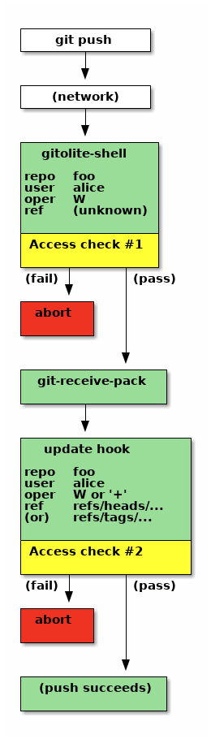
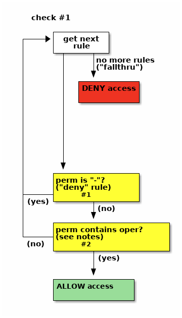
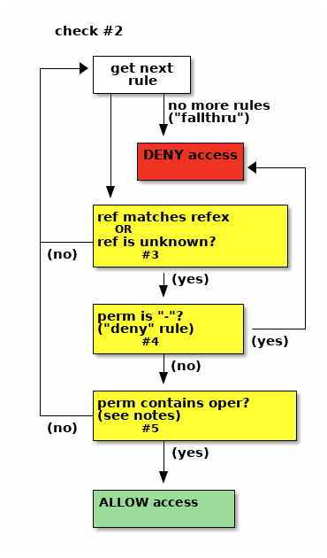

the "conf" file (conf/gitolite.conf)#
access control rule matching#
Access control rule matching is pretty simple. From the previous section, you know what "permission", "refex", "user", and "repo" are. Here's how the rules are used to decide whether to allow or deny a request.
Access is checked once only for "read" operations, but twice for "write"s.
(Note that the deny-rules option, mentioned below, is explained in more
detail in a later section.)
Check #1: the first check happens as soon as gitolite-shell receives control (from sshd or httpd). gitolite-shell will pass control to git-upload-pack or git-receive-pack only if this check succeeds.
- collect all the rules pertaining to this repo and this user
- ignore all the refexes; they don't apply to the first access check
- if the
deny-rulesoption is not in effect for this repo, discard all the-(deny) rules - look at the rules in sequence:
- if you find a
-, access is denied - for a "read" operation (clone, fetch, ...), if you find a rule
containing
R, access is allowed - for a "write" operation (push), if you find a rule containing
W, access is allowed - if there are no more rules left, access is denied
- if you find a
Check #2: the second check only happens for "push" operations. It is
invoked by git-receive-pack running the gitolite-installed update hook.
If access is denied, the update hook fails, and git then aborts the push for
this ref. (See man githooks for more.)
In the following description, we use the word operation instead of W,
because the actual operation could be a plain, fast-forward, push (W) or a
rewind/delete (+). Other, less commonly used, values are "C", "D",
or "M"; see here.
- collect all the rules pertaining to this repo and this user
- discard all the rules where the refex does not match the ref (branch or tag) being pushed
- look at the rules in sequence:
- if you find a
-, access is denied - if you find a rule containing the operation you are performing, access is allowed
- if there are no more rules left, access is denied
- if you find a
an example#
Just to be clear, let's work out an example of what happens when dilbert tries to push a branch called "xyz".
We'll pretend the rule list looks like this:
# managers should be able to read any repo repo @all R = @managers # ...other rules for other repos... repo foo bar RW+ = alice @teamleads - master = dilbert @devteam - refs/tags/v[0-9] = dilbert @devteam RW+ dev/ = dilbert @devteam RW = dilbert @devteam R = @managers
After adding a default refex and expanding the supplied ones (see the refex section earlier), this is what it looks like. We've added line numbers for convenience; we'll see why later.
1 # managers should be able to read any repo 2 repo @all 3 R = @managers 4 5 # ...other rules for other repos... 6 7 repo foo bar 8 9 RW+ refs/.* = alice @teamleads 10 - refs/heads/master = dilbert @devteam 11 - refs/tags/v[0-9] = dilbert @devteam 12 RW+ refs/heads/dev/ = dilbert @devteam 13 RW refs/.* = dilbert @devteam 14 R = @managers
This represents a set of rules that are basically this:
repo user perm ref (from line)
foo @managers R 3
foo alice RW+ refs/.* 9
foo @teamleads RW+ refs/.* 9
foo dilbert - refs/heads/master 10
foo @devteam - refs/heads/master 10
foo dilbert - refs/tags/v[0-9] 11
foo @devteam - refs/tags/v[0-9] 11
foo dilbert RW+ refs/heads/dev/ 12
foo @devteam RW+ refs/heads/dev/ 12
foo dilbert RW refs/.* 13
foo @devteam RW refs/.* 13
foo @managers R 14
Which of these rules apply for dilbert? We'll assume he's not a team lead, as that would defeat the whole purpose of this example! We know he's not a manager, as that would defeat the whole purpose of the comic! Finally, we assume he's also not part of "@devteam", (otherwise why would you name him separately in all those lines?).
So we discard all those rules, which leaves us, for repo "foo" and user "dilbert":
perm ref (from line)
- refs/heads/master 10
- refs/tags/v[0-9] 11
RW+ refs/heads/dev/ 12
RW refs/.* 13
So what happens when dilbert tries to push a branch called "xyz"?
At check #1, the data gitolite has is that "oper" is "W" (and ref of course is
unknown). We discard lines 10 and 11 (the deny-rules option is off by
default, so we ignore - rules). Line 12 supplies a perm of "RW+", which
contains "W" (the "oper") so access is allowed.
At check #2, the data gitolite has is that "oper" is "W" and ref is
refs/heads/xyz. We discard the first three rules, since the ref does not
match any of those refexes. That leaves just line 13.
If the push were a fast-forward push, the "oper" would be "W", and since it is contained in the perm for rule 13, access is allowed.
However, if he were to try a rewind-push, then the "oper" would be "+", which is not contained in "RW", it wouldn't match, then control would go back for the next rule, and since there aren't any more, access would be denied.
tracing the access control decision#
(v3.6.1) Gitolite can help you trace this logic quickly and easily. Here's one example run, with the above rules. This one tests whether dilbert can push to repo foo (check #1). Note that the syntax for specifying an unknown ref in this command is 'any'.
$ gitolite access -s foo dilbert W any
legend:
d => skipped deny rule due to ref unknown or 'any',
r => skipped due to refex not matching,
p => skipped due to perm (W, +, etc) not matching,
D => explicitly denied,
A => explicitly allowed,
F => denied due to fallthru (no rules matched)
d gitolite.conf:10 - refs/heads/master = dilbert @devteam
d gitolite.conf:11 - refs/tags/v[0-9] = dilbert @devteam
A gitolite.conf:12 RW+ refs/heads/dev/ = dilbert @devteam
refs/heads/dev/
Now see what happens when we try check #2 (we've omitted the legend in the output, since it's always the same):
$ gitolite access -s foo dilbert W xyz
r gitolite.conf:10 - refs/heads/master = dilbert @devteam
r gitolite.conf:11 - refs/tags/v[0-9] = dilbert @devteam
r gitolite.conf:12 RW+ refs/heads/dev/ = dilbert @devteam
A gitolite.conf:13 RW refs/.* = dilbert @devteam
refs/.*
And if you try a force push:
$ gitolite access -s foo dilbert + refs/heads/xyz
r gitolite.conf:10 - refs/heads/master = dilbert @devteam
r gitolite.conf:11 - refs/tags/v[0-9] = dilbert @devteam
r gitolite.conf:12 RW+ refs/heads/dev/ = dilbert @devteam
p gitolite.conf:13 RW refs/.* = dilbert @devteam
F (fallthru)
+ refs/heads/xyz foo dilbert DENIED by fallthru
I hope that was useful! Be sure you correlated the output of 'gitolite access -s' with the rule workflow pictures and corresponding descriptions to cement your understanding.
read access respecting deny rules#
Normally, deny rules are ignored by access check #1 (the one that runs before git-upload-pack or git-receive-pack is called by gitolite-shell); they apply only to check #2 (the update hook check).
But sometimes you want this "pre-git" access check to respect deny rules; i.e., use the flow of check #2, not check #1. You tell gitolite to do this by setting the "deny-rules" option for the repo; when you do that, the flow of check #2 is used for both stages, before git and in the update hook.
example 1#
Here's an example. Here, we have lots of repos, which should all be accessible by gitweb or daemon, so we want the convenience provided by lines 6 and 7 (we don't want to put line 7 in each repo). However, we also have some secret repos (maybe the gitolite-admin repo and some others that we will list), which we want to prevent gitweb or daemon from seeing.
How do we do that?
The naive approach -- putting in a deny rule just for those repos -- doesn't
work. In fact nothing else seems to work either; you'll have to replace the
@all with an exhaustive list of all repos other than the secret repos.
1 @secret = gitolite-admin secret-repo/..* 2 repo @secret 3 - = gitweb daemon 4 5 6 repo @all 7 R = gitweb daemon 8 9 # ...other repos and rules...
That's... painful!
What you really want is for that repo to always use check #2, even when it doesn't actually have a ref to test for.
1 @secret = gitolite-admin secret-repo/..* 2 repo @secret 3 - = gitweb daemon 4 option deny-rules = 1 5 6 repo @all 7 R = gitweb daemon 8 9 # ...other repos and rules...
This is done by adding one line, line 4 in this example. This sets a gitolite "option" that says you want "deny rules" to be applicable even for read access.
Once you do that, all you need to do is to ensure that the first rule encountered by these two "users" for those repos is a deny rule, so that it can take effect first. In this example, the placement of lines 2, 3 vis-a-vis lines 6, 7 matters -- don't switch them!
example 2#
In this example the "open" repos are fewer in number, so it is the opposite situation to the above in terms of our ability to enumerate all the repos.
@open = git gitolite foss/..* [...] repo @all - = gitweb daemon option deny-rules = 1 repo @open R = gitweb daemon option deny-rules = 0
To see why this works, you need to understand that for options and config lines, a later setting overrides earlier ones. So we set it to 1 for all repos, then selectively set it to 0 for some.
This means the "deny-rules" option applies to all the repos except the "open" repos, and so the first rule encountered by gitweb and daemon is a deny rule, so they are denied read access. The "open" repos, on the other hand, get the normal default behaviour, which is to ignore deny rules for read access, and thus they only see the "R" permission.
appendix 1: different types of write operations#
Git supplies enough information to the update hook to be able to distinguish several types of writes.
The most common are:
RW-- create a ref or fast-forward push a ref. No rewinds or deletes.RW+-- create, fast-forward push, rewind push, or delete a ref.
Sometimes you want to allow people to push, but not create a ref. Or
rewind, but not delete a ref. The C and D qualifiers help here.
-
If a rule specifies
RWCorRW+C, then rules that do NOT have the C qualifier will no longer permit creating a ref in that repo.Please do not confuse this with the standalone
Cpermission that allows someone to create a repo -
If a rule specifies
RWDorRW+D, then rules that do NOT have the D qualifier will no longer permit deleting a ref in that repo.
Note: These two can be combined, so you can have RWCD and RW+CD as well.
One very rare need is to reject merge commits (a commit series that is not a
straight line of commits). The M qualifier helps here:
- When a rule has
Mappended to the permissions, rules that do NOT have it will reject a commit sequence that contains a merge commit (i.e., they only accept a straight line series of commits).
summary of permissions#
The full set of permissions, in regex syntax, is -|R|RW+?C?D?M?. This
expands to one of -, R, RW, RW+, RWC, RW+C, RWD, RW+D, RWCD,
or RW+CD, all but the first two optionally followed by an M.
appendix 2: gitolite access check flow#
Here's lots more detail on the access check process, with flow diagrams.
When do the access checks happen and what are the four pieces of data (repo, user, operation, ref) in each case?
| read | write |
|---|---|
 |
 |
In these pictures the access checks are marked in yellow.
The picture on the left is for a read (git clone, fetch, ls-remote). There is only one access check for a read operation. If access is denied, the operation aborts. Otherwise, gitolite-shell invokes git-upload-pack.
Notice the information available to the access check. The "oper" (operation) is "R", indicating a read operation. The "ref" is listed as "unknown", although we could also call it "irrelevant"!
Access check #1 proceeds with those 4 bits of information, and either passes or fails. If it passes, gitolite passes control to "git-upload-pack" and its job is done.
The flow for a push operation (the picture on the right) is very similar upto the first access check. The "oper" is "W" now, although the "ref" is still unknown. Even though this is a push, at this stage in the protocol nothing on the server knows what branch or tag or combination of them are coming down the wire, since we haven't executed git-receive-pack yet!
If it succeeds, gitolite passes control to "git-receive-pack", but its job is not done yet. Git will eventually invoke the update hook (see 'man githooks'). Gitolite has already grabbed this hook, which receives from git the ref name being pushed, as well as enough information to compute whether this push is a "fast-forward push" or a "rewind push". Based on this, gitolite sets the "oper" field to "W" or "+", respectively.
Access check #2 proceeds with this information. The result is sent back to git-receive-pack (in the form of an exit code; again, see 'man githooks'), and the push fails or succeeds based on that.
putting it all together#
At this point, we have the following pieces of information:
-
A set of rules, each containing 4 pieces of data: repo, user, perm, refex. They are in the sequence they were found in the conf file.
We discard all rules that do not apply to this repo and this user, which means our set of rules have only two fields: perm, refex.
As a quick reminder, perm is one of R, RW, RW+, or
-. -
Four elements that make up the access being attempted: repo, user, oper, ref.
Again, as a reminder, the "oper" is one letter. For "check #1" it is either R or W, and for check #2 it can be W or +.
Note on permissions and "oper": there are other types of permissions, but for our discussion these are enough. The others are rare, and anyway it is easy to extrapolate to them.
With that background, here's the flow. The one on the left is for check #1 (ref is unknown) while the one on the right is for check #2 (ref is known).
| ref unknown | ref known |
|---|---|
|  |  |
As you can see, deny rules are ignored by check #1 -- they're not tested in any way. For check #2, if there is a deny rule whose refex matched the ref, access is denied (as you'd expect).
appendix 3: embedding test code in your conf#
As of v3.6.7, it is possible to embed test code within gitolite.conf. This can be useful if your conf file is complicated, and you need a way to make sure that any changes are not messing with your most important restrictions.
Full details, including preparation and caveats, are in
contrib/utils/testconf, but here's a teaser example:
repo foo
RW+ = u1
RW = u2
=begin testconf
gitolite access -q foo u1 + any || echo FAILED
gitolite access -q foo u2 + any && echo FAILED
gitolite access -q foo u2 W any || echo FAILED
=end